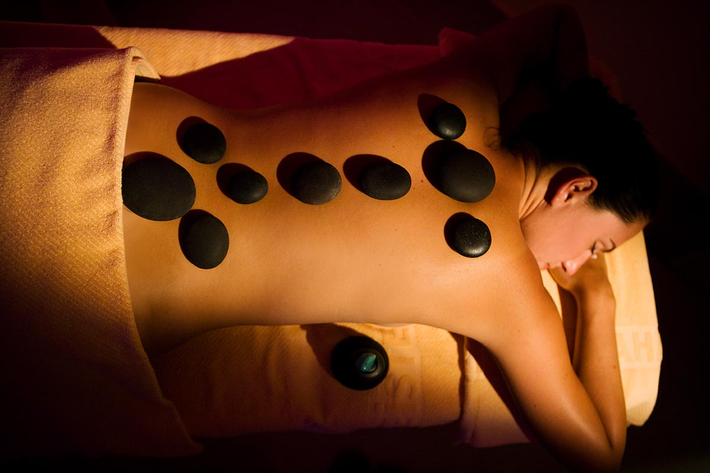
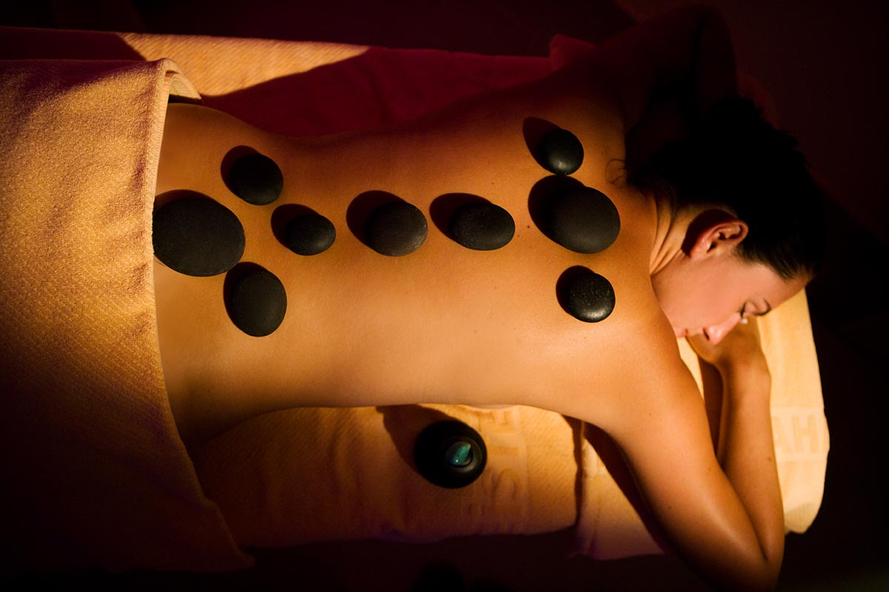

sıcak taş masajı farklı tekniklerin uygulandığı bir masaj türüdür. Terapist vücudun belirli kısımlarına sıcak taşlar yerleştirdiği gibi bir yandan da farklı masaj teknikleri uygular. Bu masajda aromatik yağlar da kullanılır. Masaj esnasında kullanılan taşlar düzdür ve bazalt denilen volkanik kayaç türüne sahiptir. Volkanik taşların seçilmesinin en büyük nedeni bu taşların ısıyı korumasıdır. Sıcak taş terapisinin ilk kez 1991 yılında Terapist Mary Hanigan tarafından kullanılmaya başlandığı düşünülse de asıl geçmişinin 2.000 yıl önceye, Çin'e dayandığı bilinmektedir. Daha sonraki süreçte Hindistan, Afrika, Mısır ve Amerika gibi birçok kültürde kullanılmıştır. Taş terapisinin periyodik olarak uygulanması, kronik sıkıntıların hafiflemesi üzerinde etkili olmaktadır.
Sıcak taş masajı için taşlar uygun sıcaklığa gelebilmeleri için önceden hazırlanmaktadır. Bu doğrultuda taşlar uygulamadan önce suya yerleştirilmektedir. Daha sonrasında ise ayak, el, yüz, karın ve sırt gibi birçok noktaya uygulama yapılmaktadır. Taşlardan emilen ısı ile kan dolaşımının hızlanması, kasların, dokuların ve hücrelerin oksijenle beslenmesi (termoterapi) sağlanır. Bununla birlikte taşların su içinde ısıtılması da iyileştirici (hidroterapi) etkiye sahiptir. Bazı terapistler sıcak su masajı esnasında anatomik bilgiyle az önceki saydığımız yerleri kullansa da bazı terapistler vücudun enerji dengesini sağlamak için farklı noktalar kullanabilir. Bu masaj türünde uzun vuruşlar, yuvarlama ve yoğurma gibi klasik İsveç masajı teknikleri kullanılır. Taşların kasları rahatlatması ve kan dolaşımını arttırmasıyla, terapist aşırı baskı oluşturmadan rahat bir şekilde müdahale edebilmektedir.
Sıcak taş masajının birden fazla faydası bulunmaktadır. Bu faydaları şu şekilde sıralamamız mümkündür: Ağrı: Araştırmalar sıcak taş masajının fibromiyalji ve romatoid artrit gibi otoimmün bozukluk hastalıklarında semptomların rahatlamasını sağlayabileceğini göstermektedir. Bu yüzden herhangi bir hastalığa sahip olunsun veya olunmasın ağrı kesici özelliğe sahiptir. Stres: Masajın her türünde olduğu gibi sıcak taş masajı da stres giderici bir etkiye sahiptir. Kardiyovasküler sağlığı iyileştirdiği için stresi ve endişeyi azalttığı bilinmektedir. Eklem: Kaslar kasıldıkça kısalır. Kısalan kaslar eklem açıklığının kaybolması anlamını taşır. Fakat sıcak taş masajı ile açılan kaslar eklem esnekliğini ve açıklığını arttırmaktadır. Kas: Bir önceki maddede dediğimiz gibi spor, duruş bozuklukları ve yanlış yaşam alışkanlıkları doğrultusunda kas gerginlikleri artar. Kısalan kas normal uzunluğuna dönmediği sürece kas spazmı ve gerginliği yaratabilir. Bu noktada sıcak taş masajı ağrıları hafifletmek için mükemmeldir. Uyku: Stres, gerginlik, kas ve eklem ağrısı gibi problemler doğrultusunda birçok kişi yetersiz ve sağlıksız bir uyku uyumaktadır. Fakat sıcak taş terapisi ile kaliteli uykunun önündeki birçok engel giderilmektedir. Bağışıklık: Kan dolaşımı ekstra artacağı için bağışıklık sistemi hücreleri aktive olmakta ve bağışıklık sistemi kuvvetlenmektedir. Bunlarla birlikte sıcak taş masajı; toksin atılımını destekler, metabolizmayı hızlandırır, solunumu arttırır, vücuttaki negatif enerjinin atılmasına yardımcı olur, enerji dengelenmesi için birebirdir.